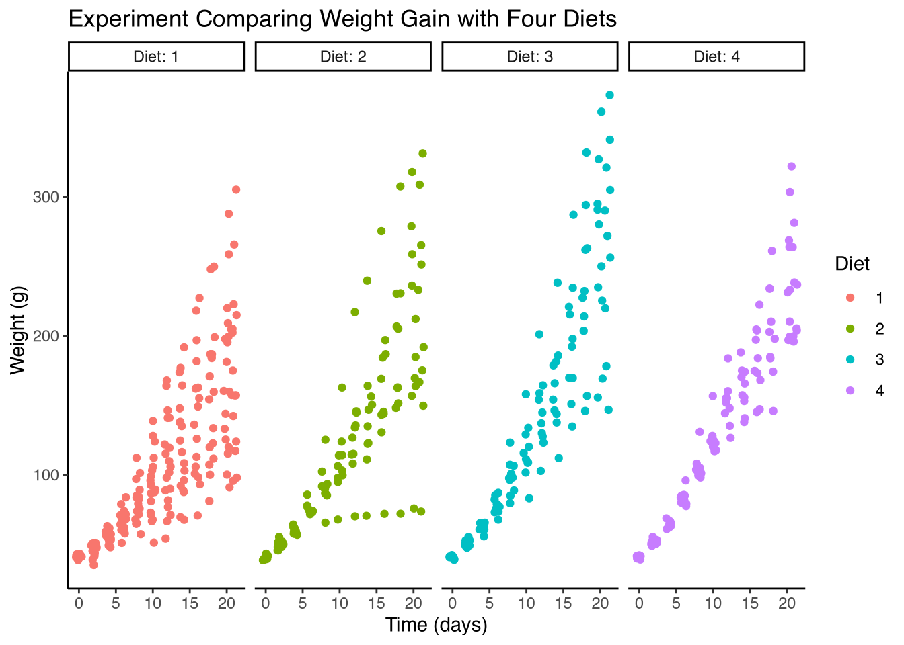

install.packages("tidyverse")Getting Ready to Code
Lab 1
This lab will orient you to RStudio and the R statistical programming language. We will be installing the software necessary for all future assignments this semester.
Self-Study
This first lab corresponds roughly to the following chapters in R for Data Science, which are recommended for further self-study.
Getting Ready to Code
By the end of the first assignment, we will be able to run a simple R program. Before we are able to do that, we will need to install a few things.
Everything we need is described on posit.co/download/rstudio-desktop.
Tip
If you have doubts or start to feel like you’re not “tech savvy” enough as you complete these steps, please trust that these skills are learnable! You are highly encouraged to attend office hours for additional help.
Installing R
R is a programming language and this first step will install an interpreter, the R Console, which will allow us to write to the computer specific instructions for describing, statistically analyzing, and producing graphics from our experimental data.
The first step is to install the R programming language itself. After completing this step, we will be able to open the R interpreter (R Console).
On the Posit webpage, click the link for Step 1: Install R. Select the appropriate download for your computer’s operating system (e.g. MacOS).
If your computer is an Apple Mac/MacBook, you will need to download the appropriate package for your processor.
For Boston University students, if you encounter difficulties or if your primary device is a tablet, alternative access to a full installation of R/RStudio is possible through the BU Common virtual desktop.
- If you know your Mac has an M1 or M2 processor (roughly since 2022) will require the first
-arm64.pkg. - If you know your Mac has an Intel processor, it will require the second
-x86_64.pkg.
If your computer is a Windows PC download the base installer, following the instructions for installing R for the first time.
Once you have downloaded the package/executable for your operating system, run the installer.
Note
At the end of this step you should be able to find the R Console in your MacOS Launchpad/Applications or Windows Start menu.
Installing RStudio
The next step is to install RStudio, which we will be using extensively in this course.
RStudio is an Integrated Development Environment (IDE) for the R language.
On the Posit website, see Step 2: Install RStudio. Download the appropriate installer for your operating system.
On an Apple Mac/MacBook, you should download and open the .DMG file. You will see the RStudio app and a shortcut to your Applications folder. Drag the RStudio app into your Applications folder.
On a Windows PC, you should download and run the Windows .EXE executable installer.
Note
At the end of this step you should be able to find RStudio in your MacOS Launchpad/Applications or Windows Start menu.
Orienting to RStudio
While R is the programming language we will be using, the RStudio application provides us with a comprehensive graphical interface that includes tools to edit R code, view plots and help pages, debug scripts, and more.

Image credited to the authors of R4DS, reproduced here under license CC BY-NC-ND 3.0.
The Console pane is where we can type code directly into the R interpreter. Type a line of R language code and press Return to run it. The console is interactive and will show you the result immediately.
The Editor pane is where we can write R scripts. We can edit and rearrange text, copy-paste, and save our scripts for later. Try creating a new script and save it to a folder on your computer. With the cursor on a line of your script, press Control and Return; the line of code will automatically be copied and run in the Console pane. Note that the Run button runs the entire script, not just the current line.
An R script or program is a list of instructions to be run in order. We’ll usually conduct an entire analysis in a script.
The Output pane is where we can see plots and graphics we have generated. In this area you’ll also find a Files tab for navigating to folders of scripts and results, and a Help tab for viewing documentation for R commands/functions and datasets.
Tip
Orienting yourself to new software is often a process of active exploration, and there’s always a lot more to learn. Spend some time exploring the menus of RStudio so that you are well-acquainted.
The goal is to eventually be able to make an educated guess at where you might go to find a particular menu or feature in the future.
Installing Packages
In this course we’ll be using not only RStudio, but also several R packages.
Before we do anything else, we’ll install the R package tidyverse. Type the following in the Console and press Return.
tidyverse is actually a metapackage (a collection of packages) including dplyr, tidyr, stringr, ggplot2 and more.
A lot of output will appear in the console as the package is installing. When it finishes, the package has been installed. We won’t need to run this again; so there’s no need to keep this line of code in your script.
Demonstrating Graphics in R
As a motivating example, let’s consider the following short but complete script which will plot some experimental data. We’ll work through this code line-by-line in class to understand what it does.
The script will make a plot from an example dataset built-in to R called ChickWeight. The data comes from an experiment with four conditions: diets assigned to hatchling chicks. Their weight in grams is recorded every two days in the built in dataframe (table).
Most built-in R functions and example datasets come with a help page that can be accessed by prepending a question mark to the object’s name.
To learn about this particular dataset, enter ?ChickWeight at the console.
Type the following R code snippet into a new script in your RStudio Editor pane. Click Save and save the script on your computer (e.g. Documents/PS211/lab1.R). Then click Run.
You should see that the code is automatically copied into the Console and run. A plot should appear in the Output pane, looking like the one below.
library(tidyverse)
ggplot(ChickWeight) +
geom_point(
aes(x=Time, y=weight, color=Diet),
position=position_jitter()
) +
facet_grid(~Diet, labeller=label_both) +
labs(
title="Experiment Comparing Weight Gain with Four Diets",
x="Time (days)",
y="Weight (g)"
) +
theme_classic()- 1
- Load in the tidyverse package (also called a library).
- 2
-
Create a plot of the ChickWeight dataset (using ggplot).
- 3
-
Add datapoints to the plot…
- 4
-
..where each datapoint’s (x,y) position is its Time and weight, colored by Diet.
- 5
-
Randomly “jitter” the points a little so they don’t overlap.
- 6
-
Split up the plot by Diet. Label with both “Diet” and number.
- 7
-
Add labels to the plot…
- 8
- Apply a style theme to the plot (the “classic” theme).

Do try to manually copy the code snippet. This is good practice for getting used to the syntax and grammar of a new coding language. Click the number at the right of each line for an explanation.
If the console throws an error, it’s likely a simple fix, even if it’s hard to spot. Be careful to check the exact capitalization and spelling of your R code. In particular, make sure every opening parenthesis and quote has a close.
Having completed these steps successfully, you have written your first R program! Congratulations!
In upcoming lessons, we will learn more about the R language and how to use it for experiment design and simulation, statistical analysis, and reporting results.
Important
If you encounter any technical issues it’s important to resolve them this first week with your teaching fellow so that you may participate fully in the rest of the course.